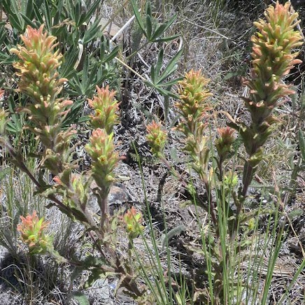
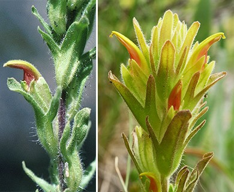

Castilleja chlorotica
- Common name
- Green-tinged Paintbrush
- Family
- Orobanchaceae
- Family common name
- Broomrape Family
- Blooms
- May-August
- Habitat
- Dry open pine forests, often with sagebrush understory, rocky ridges and summits, montane to subalpine. Elevation: 6600–8200 ft.
- Inflorescence color
- Green to pale green to purplish-brown.
- Stature
- 3-12". Stems several to many, erect to ascending.
- Leaves
- Green, narrowly to broadly lanceolate or oblong-lanceolate, 9–35 cm, not fleshy, margins wavy, involute, 0(–3)-lobed, distal sometimes 3-lobed, apex narrowly acuminate; lobes ascending or spreading, linear to lanceolate, apex acute to obtuse.
- Florets
- Bracts green to pale green to rarely dull purplish brown throughout, distally rarely with pale yellow apices, narrowly lanceolate to narrowly elliptic to sometimes broadly lanceolate, 3-lobed, wavy-margined; lobes spreading or ascending, narrowly lanceolate, medium length, arising at or above mid length, sometimes wavy-margined, apex obtuse to acute. Calyces green or yellowish green, 15–19 mm; abaxial and adaxial clefts 9–11 mm, 60% of calyx length, deeper than laterals, lateral 3.5–7 mm, 15–25% of calyx length; lobes broadly or narrowly triangular, taller than wide, apex acute to obtuse. Corollas conspicuously decurved distally, 18–22 mm; tube 11–14 mm; beak exserted, adaxially green to yellow-green or yellow, 6–8 mm; abaxial lip green, reduced, fleshy, included, 1.5–2 mm, 25% as long as beak, sparsely hairy, hairs spreading; teeth ascending, green, 0.5–1 mm.
Range Map
OR Flora